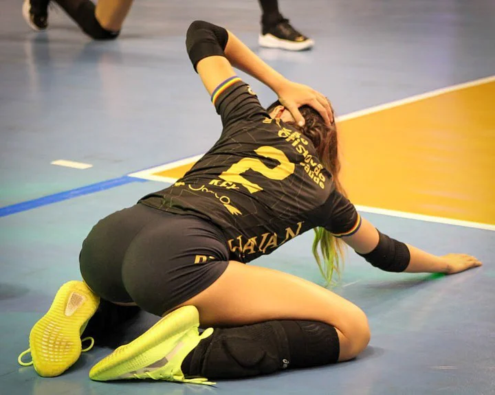
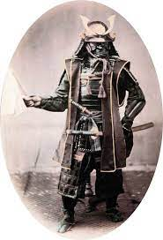
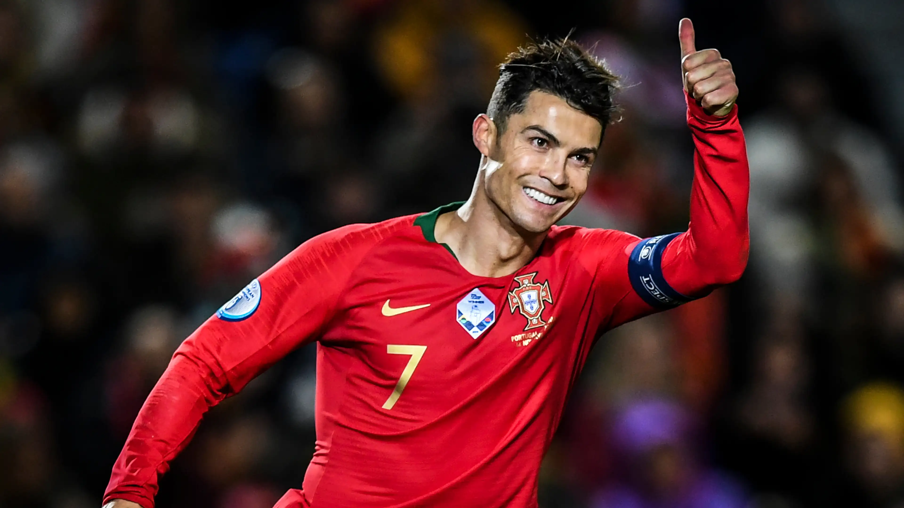
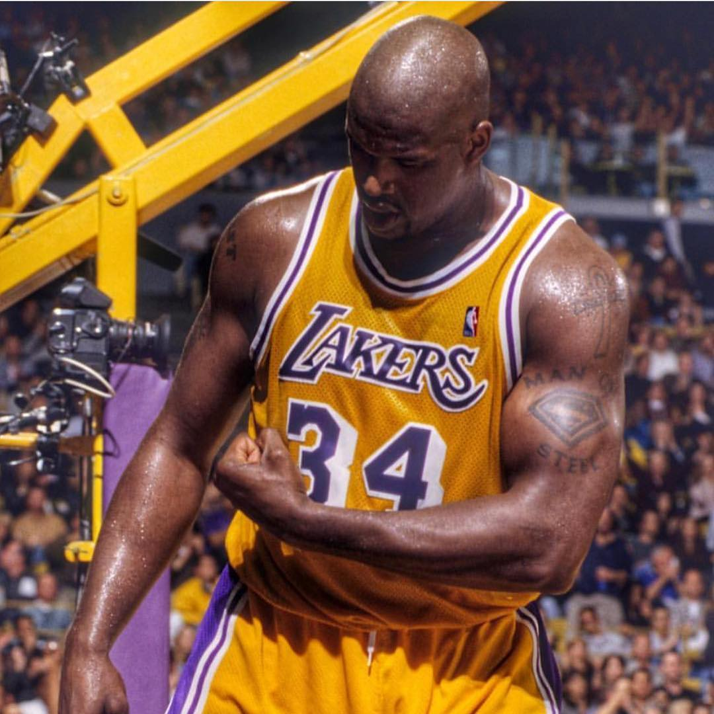

Educação Física é uma área do conhecimento humano ligada às práticas corporais historicamente produzidas pela humanidade. A Educação Física é o processo pedagógico que visa à formação do homem capaz de conduzir-se plenamente em suas atividades. Trabalha num sentido amplo, visando à prevenção de determinadas doenças.
É a área de atuação do profissional graduado em Educação Física (licenciatura e bacharelado). É um termo usado para designar tanto o conjunto de atividades físicas e exercícios físicos não competitivos e esportes com fins recreativos quanto a ciência que fundamenta a correta prática destas atividades, resultado de uma série de pesquisas e procedimentos estabelecidos.
Esportes

A grande diferença entre Educação Física e esporte é que, enquanto a primeira diz respeito a uma disciplina escolar e a um campo acadêmico, esporte refere-se às diversas modalidades organizadas.
Esta diferença é muito importante, pois existem muitas pessoas que consideram estas duas palavras sinônimas.[2]
Educação Física é uma atividade física planejada e estruturada, com o propósito de melhorar ou manter o condicionamento físico. É também o conjunto de atividades físicas não competitivas, que fundamenta assim a correta prática destas atividades.
Já o exercício físico, é uma forma de atividade física planejada, repetitiva, com orientação profissional, que visa a desenvolver a resistência física e as habilidades motoras, seja por equipamentos específicos[3] ou pelo peso do próprio corpo que, devido ao avanço tecnológico, atualmente o profissional dispõe de inúmeros métodos[4] que respaldam as inúmeras modalidades. A exemplo da natação, musculação, artes marciais etc.
Atividade física

Para atuação como professor de Educação Física, é necessário um curso superior, exigindo perícia profissional para manipular as complexas variáveis do desporto[5] durante o qual estudará os aspectos psicológicos, cinesiológicos, biomecânicos, fisiológicos, bioquímicos, genéticos, antropométricos e neuromotores das atividades físicas como também suas dimensões sociais e psicomotoras.
Deve ser capaz de orientar jogos e atividades lúdicas corretamente, cuidando da postura correta dos participantes, do respeito às normas do jogo/atividade, de assegurar o interesse de todos e do aproveitamento físico por parte dos jogadores/participantes.

A Educação Física e as ciências do esporte
Existe ainda muita confusão acerca das duas graduações. É muito comum as pessoas confundirem o curso de Educação Física com o curso de esporte ou ciências do esporte.[7] No entanto, quem se forma em Educação Física terá matérias mais ligadas às áreas de Ciências Biológicas e da Saúde, preparando-se para uma atuação diretamente ligada ao ensino pedagógico e à aplicação de atividades físicas para pessoas ou grupos, seja em ambientes escolares, seja em academias e centros esportivos. Já o formado em esporte ou ciências do esporte, atua como técnico, em preparação física de atletas, gestão e marketing esportivo e organização de eventos esportivos. Em geral, esses profissionais disputam as mesmas vagas no mercado de trabalho.
Formação no Brasil
A princípio, os profissionais de Educação Física tinham origem militar, mas atualmente existem escolas civis com preparação tão boa quanto institutos militares. Na medida em que transcorrem as situações didáticas organizadas pelo professor, os estudantes interagem com saberes (conteúdos) diversos, não somente aqueles produzidos pelo método científico e comumente valorizados na escola, mas também com as inúmeras maneiras de dizer, fazer e compreender as práticas corporais e as pessoas que delas participam.[9]
No Brasil, os profissionais da Educação Física têm, no Conselho Federal de Educação Física (CONFEF), o órgão principal de organização e normatização das atividades pertinentes à sua área de atuação.
Os Conselhos Regionais de Educação Física (CREFs) são subdivisões do CONFEF nos estados e têm a função de fiscalizar o exercício das atividades próprias dos profissionais de Educação Física. Atualmente são vinte CREFs, abrangendo todos os estados brasileiros.[10]
A uma pessoa com bacharelado em Educação Física, caberá a atuação em clubes, academias, centros esportivos, hospitais, empresas, planos de saúde, prefeituras, acampamentos, condomínios e qualquer espaço de realização de atividades físicas.
A escola de educação básica é atendida por aqueles que têm o grau ou título de licenciatura em Educação Física.[11]
Os profissionais e estudantes de Educação Física no Brasil possuem uma série de eventos especializados na realização de cursos: entre eles, pode-se destacar o Congresso Internacional de Educação Física - FIEP, que acontece desde 1986 na cidade de Foz do Iguaçu, com a participação de mais de 55 000 pessoas de 50 países,[12] e a apresentação de mais de 9 500 trabalhos científicos. O Congresso FIEP, como é conhecido, é organizado pelo Prof. Almir Adolfo Gruhn, que atualmente é o Presidente Mundial da Federação Internacional de Educação Física, e disponibiliza anualmente uma série de cursos, eventos paralelos e congressos científicos.
Educação Fisica
A educação Física é uma área do conhecimento humano ligada às práticas corporais historicamente produzidas pela humanidade. A Educação Física é o processo pedagógico que visa à formação do homem capaz de conduzir-se plenamente em suas atividades. Trabalha num sentido amplo, visando à prevenção de determinadas doenças.
É a área de atuação do profissional graduado em Educação Física (licenciatura e bacharelado). É um termo usado para designar tanto o conjunto de atividades físicas e exercícios físicos não competitivos e esportes com fins recreativos quanto a ciência que fundamenta a correta prática destas atividades, resultado de uma série de pesquisas e procedimentos estabelecidos.
Esporte

grande diferença entre "Educação Física" e "esporte" é que, enquanto a primeira diz respeito a uma disciplina escolar e a um campo acadêmico, esporte refere-se às diversas modalidades organizadas.
Esta diferença é muito importante, pois existem muitas pessoas que consideram estas duas palavras sinônimas.[2]
Educação Física é uma atividade física planejada e estruturada, com o propósito de melhorar ou manter o condicionamento físico. É também o conjunto de atividades físicas não competitivas, que fundamenta assim a correta prática destas atividades.
Já o exercício físico, é uma forma de atividade física planejada, repetitiva, com orientação profissional, que visa a desenvolver a resistência física e as habilidades motoras, seja por equipamentos específicos[3] ou pelo peso do próprio corpo que, devido ao avanço tecnológico, atualmente o profissional dispõe de inúmeros métodos[4] que respaldam as inúmeras modalidades. A exemplo da natação, musculação, artes marciais etc.
a comprometida com o combate à injustiça social através do estabelecimento de diálogo entre os saberes daqueles que detém privilégios e dos que não. Pesquisas mostram, por exemplo, que aqueles conhecimentos relativos às brincadeiras, danças, lutas, esportes e ginásticas vivenciados pelos grupos minoritários recebem tratamento semelhante aos saberes hegemônicos e que a cultura também passa a ser analisada de outra maneira, considerando a existência de diferenças e compreendendo e discutindo os mecanismos que as produzem e reproduzem.
.jpeg)